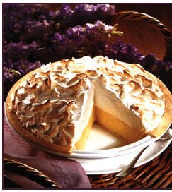

GRANDMA'S LEMON MERINGUE PIE

- One 9 inch-pie
- 30 minute prep time
- 10 minute cook time
- 40 minute total
- 8 servings
INGREDIENTS
- 1 cup white sugar
- 2 teaspoons all-purpose flour
- 3 teaspoons cornstarch
- 1/4 teaspoon salt
- 1 1/2 cups water
- 2 lemons, juiced and zested
- 2 table spoons butter
- 4 egg yolks, beaten
- 1 (9 inch) pie crust, baked
- 4 egg whites
- 6 tablespoons white sugar
DIRECTIONS
- Preheat oven:Preheat oven to 350 degrees F(175 degree C)
- Make Lemon Filling::In a medium sauce pan...
- Whisk together 1 cup sugar, flour, corn starch, and salt.
- Stir in water lemon juice and lemon zest
- Cook over medium-high heat, stiring frequently, until mixture comes to boil.
- Stir in butter.
- Place egg yolks in a small bowl and gratually whisk in 1/2 cup of hot sugar mixture.
- Whisk egg yolk mixture back into remaining sugar mixture.
- Bring to a boil and continue to cook while strring constantly until thick.
- Remove from heat.
- Pour filling into baked pastry shell.
- Make Meringue::In a large glass or metal bowl..
- Whip egg whites until foamy
- Add sugar gratually, and continue to whip until stiff picks form.
- Spread meringue over pie
- Bake: Bake in preheated oven for 10 minutes, or until meringue is golden brown. ...
This is our favorite recipe here at Ganny's Pies.It has been enjoyed by pie fans for many years.It's Granny's favorite! We hope you will find that this receipe is delicious and also easy to follow; it is a peice of pie!
USER COMMENTS
This is a very fun receipe to follow, because Grandma makes it sweet and simple.This pie isthickened with corn starch and flour in addition to egg yolks and, contains no milk.
-Emilie S.
Q: What do you call an ape who loves pie?
A: A Meringue-utan.
-Vickle K.
This site can really engage my interest. Follow the receipe above and make it so! This pie is number one
LINKS
receipe1